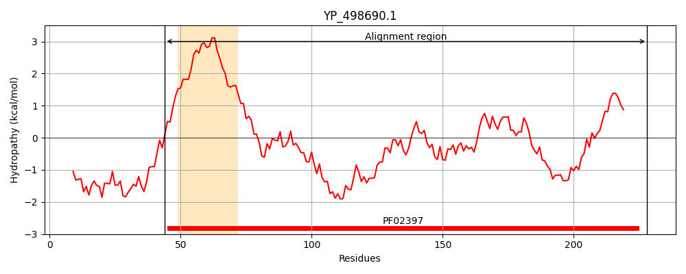
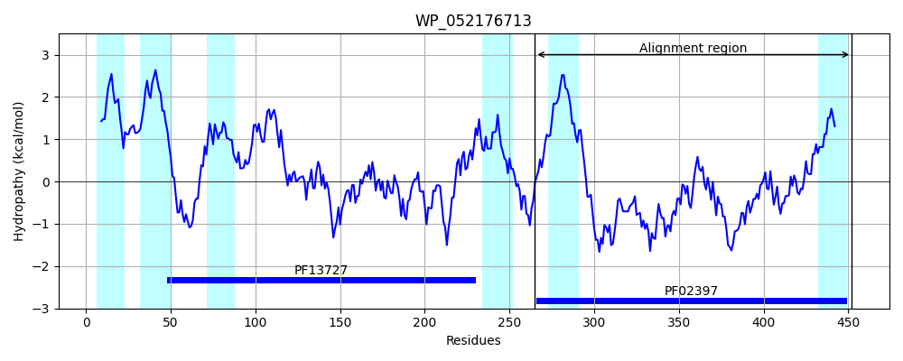
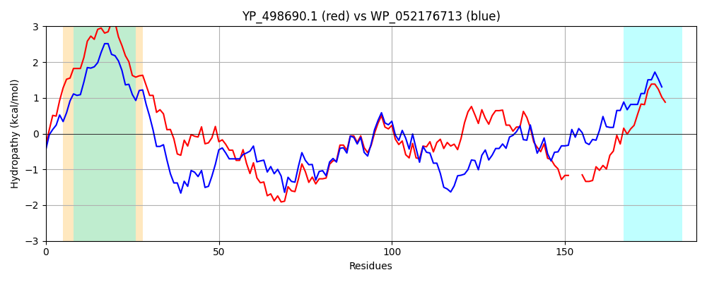

Hit Accession: WP_052176713
Hit TCID: 9.B.18.1.3
Hit Description: gnl|BL_ORD_ID|21192 gnl|TC-DB|WP_052176713|9.B.18.1.3 sugar transferase [Pedobacter glucosidilyticus]
Mach Len: 188
e:0.000000
Query TMS Count : 1
Hit TMS Count: 6
TMS-Overlap Score: 0.950000
Predicted Substrates:None
BLAST Alignment:
Score: 376 , Bit scores: 149 bits, E-value: 1.1e-42, Alignment length: 188, Percentage identity: 39
Query: 44 IKRAIDLILSIVLLFLTLPIMVIFAIAIVIDSPGNPIYSQVRVGKMGKLIKIYKLRSMCKNAEKNGAQWADKDDDRITNVGKFIRKTRIDELPQLINVVKGEMSFIGPRPERPEFVELFSSEVIGFEQRCLVTPGLTGLAQIQGGYDLTPQQ---KLKYDMKYIHKGSLMMELYISIRTLMVVITGEG 228
+K+ +D ++I +L L P+ ++ + I +DS G IY Q R+GK GK IYK R+M +AEKNG + +D R+T +GK +RKTR+DELPQ IN++KG+M+ +GPRPER ++ E + V PG+T Q++ GY +Q +L +D+ Y+ SL ++L I + T+++V+ G G
Sbjct: 265 LKKILDYSIAITVLTLFSPVFLVIYVLIKLDSKGPGIYQQERIGKDGKPFNIYKFRTMFVDAEKNGPSLSKSNDPRVTRIGKILRKTRLDELPQFINILKGDMALVGPRPERAYYIHEIEKEAPHYHYLHKVLPGITSWGQVKFGYAENVEQMVKRLTFDIIYVENRSLALDLKILLYTIIIVLQGRG 452 | Protein Hydropathy Plots: |
|---|
|  |  |
Pairwise Alignment-Hydropathy Plot:
|
|---|
|  |